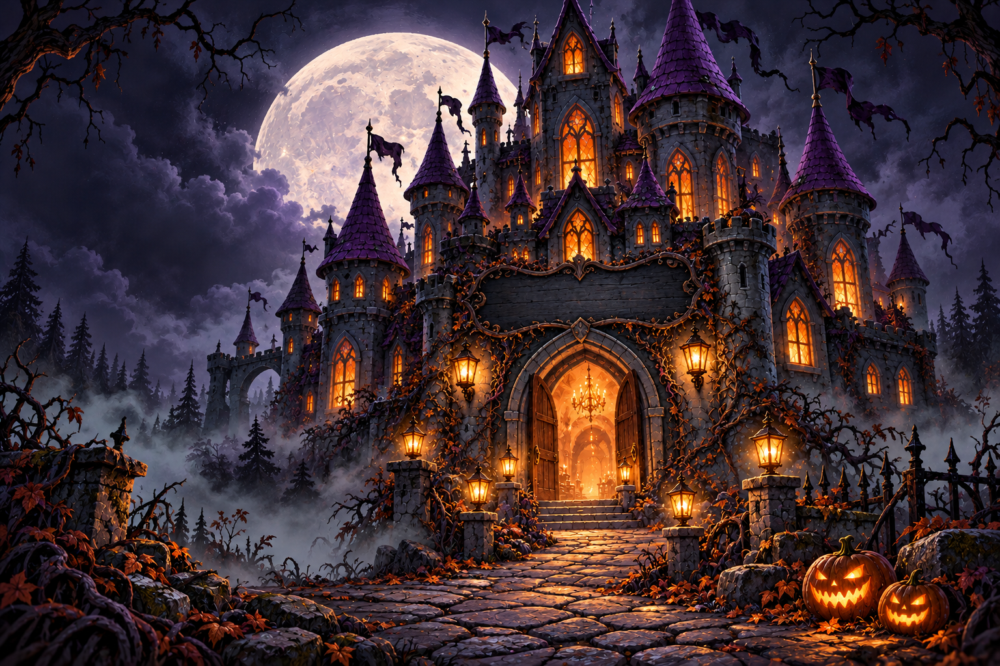

WELCOME TO THE ENCHANTED CASTLE
Trick or
Lumens!
Lumens 古堡，今夜為你甦醒。
跟著星塵穿過月光，遇見古堡裡的怪可愛。
今晚，你也可以成為故事中的魔法角色。
♧ ONLY GOOD SPIRITS ALLOWED.

LUMENS CASTLE · AFTER DARK
MOVE TO WONDER · CLICK FOR MAGIC ↓✦ 奇幻 · 變裝 · 一票心動 ✦
THE CASTLE HAS COMPANY
今晚的古堡，
不只有幽靈。
把滑鼠移近，和這群小怪朋友打個招呼。
每一點不同，都值得被喜歡。
THE COSTUME CLUB / 變裝圖鑑
怪可愛的，都在這裡。
每個角色，都藏著一個平常看不到的靈魂。
ONE VOTE
一票，給你的最愛
✦
一票，是你送出的魔法。
公司同仁以工號投票，每人一票。票數保密，結果由主辦人公布。
COME AS YOU ARE. OR AS SOMEONE ELSE.